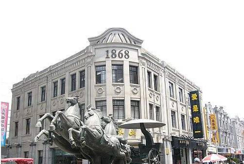
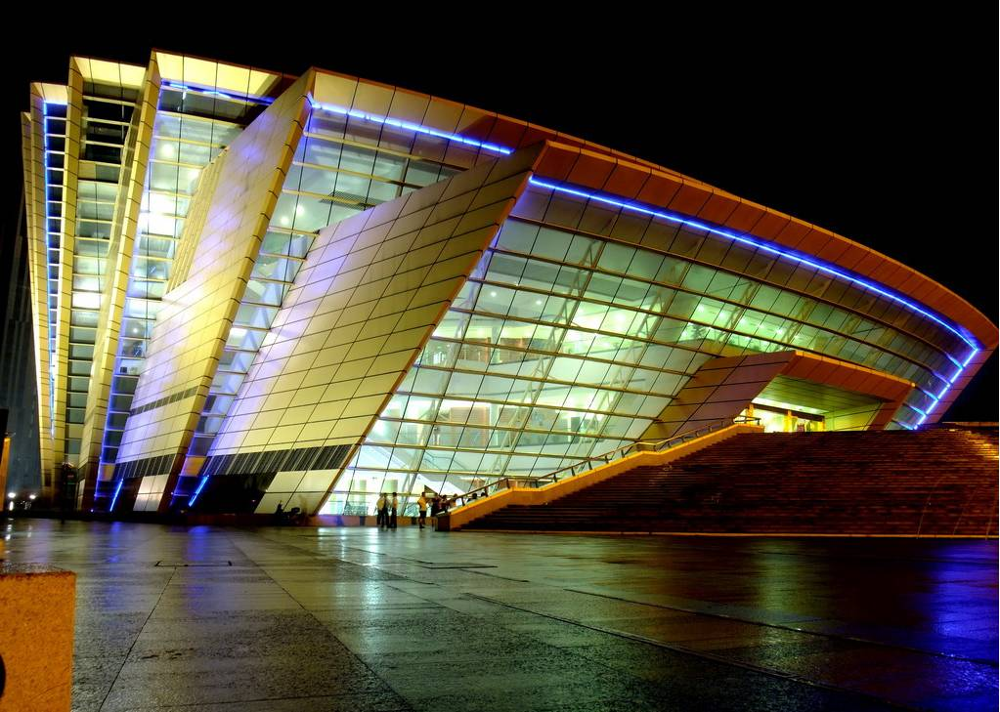
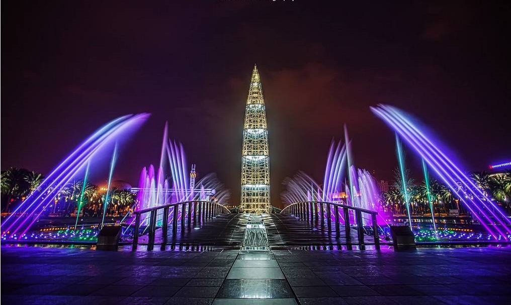

温州地标性建筑
1.【五马街】
坐标：解放街与公园路交叉路口

五马街（Five horses Street），古称五马坊，温州旧城古街道之一。东起解放街与公园路交叉路口， 西至蝉街与府前街交叉路口，五马街长400米，宽12米，街两侧有14条小巷。相传，五马街始于东晋，唐宋沿袭不变， 清代改名五马街，1934年改名中山路，1949年后恢复五马街之名。
2.【温州大剧院】
坐标：温州市世纪广场

温州大剧院以其独特的建筑造型、先进的舞台技术和完善的演出功能跻身国内现代化的剧院之列。 温州大剧院的外形别具风格，从正面看，它像一条翘首跃出水面、欲跳龙门的鲤鱼； 从侧面看，它宛如一个个张开“臂膀”的贝壳；从上往下看，它犹如一条游走于水中的金鱼。
3.【温州世纪广场】
坐标：温州市世纪广场

在温州世纪广场的中心，矗立着温州的“城市之雕”——世纪之光，它是世纪广场的标志性建筑， 主要由1200平方米的地下圆形展厅和60米高的玻璃观光塔组成，观光塔位于圆形水池中央。 游客搭乘电梯可抵达地下展厅，展厅内有人文展览。游客抬头观察地下展厅的顶部，便能透过玻璃顶看到地面的圆形水池， 每当阳光照射时，游客在地下展厅便可欣赏水光潋滟的景象。
温州欢迎你！